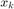
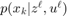
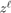
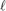
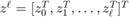
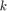
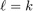
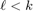
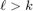

Estimators component
The estimation component of the NEF provides implementation of a number of estimators used to solve the estimation problem where the main task is to find a conditional probability density function of the state conditioned by available measurements. The estimate of the state  is given by the posterior pdf , where  is the sequence of measurements up to time instant , i.e., .
The estimation problem itself can be divided according to the relation of  and into the following three special cases.
- If , the problem is called filtering.
- If , the problem is called prediction.
- If , the problem is called smoothing.
Solution to all of the three problems is provided by the Bayesian functional relations (BFR) that are analytically tractable only for a few special models. Nevertheless, most of the state estimators can be seen as an approximative solution to the BFR and therefore the NEF estimation component follows the BFR idea.
Contents
Implemented estimators
The NEF provides many well known local and global filters (see the table below). Most of them provide besides "canonival" implementation also numerically stable version. Notable is also the fact that the Gaussian sum filter can utilize any of the local filters (i.e. it is not restricted to use of the extended Kalman filter).
| NEF class | estimators |
|---|---|
| nefKalman, nefSKalman nefUDKalman | (extended) Kalman filter (standard, square-root and UD versions) |
| nefDD1, nefSDD1, nefDD2, nefSDD2 | central difference Kalman filter, divided difference filter (1st and 2nd order) (standard and square-root version) |
| nefUKF, nefSUKF | unscented Kalman filter (standard and square-root version), cubature Kalman filter |
| nefItKalman | iterated Kalman filter based on any of the above local filter |
| nefGSM | Gaussian sum filter based on any of the above local filter |
| nefEnKF | ensemble Kalman filter |
| nefPF | bootstrap filter, generic particle filter, auxiliary particle filter, unscented particle filter |
| nefSIF | stochastic integration filter |
All the estimator implement filtering and prediction task and most of them provide also the ability to perform the smoothing.
| Estimator | filtering | prediction | smoothing |
|---|---|---|---|
| nefKalman | x | x | x |
| nefSKalman | x | x | x |
| nefUDKalman | x | x | |
| nefItKalman | x | x | x |
| nefDD1 | x | x | x |
| nefSDD1 | x | x | x |
| nefDD2 | x | x | x |
| nefSDD2 | x | x | x |
| nefUKF | x | x | x |
| nefSUKF | x | x | x |
| nefGSM | x | x | |
| nefEnKalman | x | x | |
| nefPF | x | x | |
| nefSIF | x | x |
Estimation experiment setup
The estimation experiment setup is quite simple. As first it is neccessary to create instance of any of the estimator class. The class constructor always expects object describing the model as first input argument. Aditional argumets which are used to change the default behaviour of the estimators age appended as touples of parameter name and patameter value. Upon object creation the class contructor reposts the current initial settings of the estimator.
For example an (extended) Kalman smoother can be created issuing the following command
ekf_smoother = nefKalman(model,'taskType','fixedLagSmoothing','taskPar',2);
The estimation process can be then carried out in to way. Either emplying the estimate method which is an universal interface for any estimation task or using the individual methods timeUpdate, measurementUpdate and smoothUpdate.
The first method is the prefered one as it executes the update method in the right order and passes to then the appropriate data automatically. The second is useful e.g. in case of tight coupling with an controller where it is necesary to "insert" the evaluation of the control law between the measurementUpdate and timeUpdate tasks.
The following line represents typical command for execution of estimation experiment
est_pdfs = estimate(ekf_smoother,z,u);
The results of the estimation proces are stored as cell arrays of pdf's. The point estimates can be then determined using appropriate method of the random variable class. For example to determine the mean value of the smoothing pdf at time instant k one uses the method of the random variable evalMean in following way
xMean = evalMean(est_pdfs{k});